The foxtailing is real, and it is not even across the plant. The top colas foxtail strongly. The middle plane foxtails mildly. The bottom tier does not foxtail at all. That pattern fails the test for genetic foxtailing, which needs even growth across the whole plant. The environment data supports the same conclusion: this tent runs above the published flowering temperature ceiling for 24 hours each day. The primary cause is heat, and the room is the source of the heat — not the light.
A normal bud gets fatter as it ripens. A foxtailed bud does something different. It grows new calyx clusters on top of the bud that already formed. The new clusters stack into a tower, or spire. The spire carries fresh white pistils, and it sits above older orange pistils.
The knowledge base gives two causes (KB 0303 · Environmental Stress & WateringThese cause more "deficiency" misdiagnoses than actual deficiencies. Check here early.Covers: pH & nutrient lockout · Nutrient burn vs light burn vs heat (the big three look-alikes) · Light & heat · Temperature / humidity / VPD by stage · Watering: over vs under vs heat droop · Wind burnGrowBuddy knowledge base · 03-environmental-and-watering.md):
| Type | Where it appears | How it looks | Is it a problem? |
|---|---|---|---|
| Genetic foxtail | Even across many bud sites | Symmetrical, healthy green, no stress signs | No. It is a trait of some lines. |
| Stress foxtail | At the tops, nearest the light | Irregular, pale or bleached new growth | Yes. Heat or light intensity causes it. |
I examined 8 photos. I enlarged each bud site and scored it by canopy plane. The result is a gradient. It is strongest at the top, and it falls to zero at the bottom.
| Canopy plane | Sites scored | Foxtail? | What the photos show |
|---|---|---|---|
| Top colas | 3 of 3 | Strong | Several stacked spires on each cola. Pale green new calyx tissue. Fresh cream pistils above ripe orange ones. |
| Middle plane | 2 of 2 | Mild | One short spire per bud. Lumpy stacked calyx knots. |
| Bottom tier | 2 photos | None | Small immature green nubs on bare stems. White pistils. Almost no bud mass. |
Both top colas carry several spires. The spire calyxes read pale green. They do not read bleached white. This detail matters, and section 3 uses it.
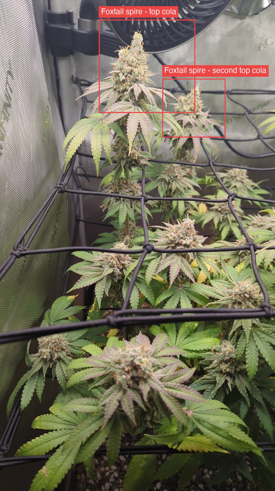
The middle bud pushes one pale spire out of its crown. The spire is shorter than the spires at the top. The count per bud is lower.
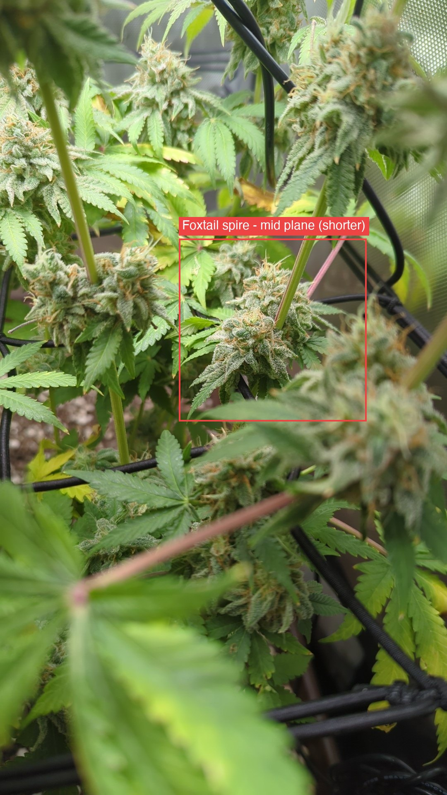
The bottom sites are not foxtailed. They are undeveloped larf. Each site holds one small flower cluster that never filled out. The pistils are still white, so these sites are immature.
The difference is important. A foxtail stacks a tower on top of a ripe bud. At the bottom there is no ripe bud under the growth. There is only a small cluster that stopped early.
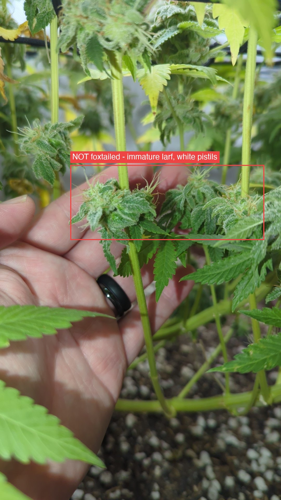
The evidence points both ways, so I give each side.
Conclusion: the environment is the probable primary cause. Confidence is moderate. The plant may also carry a foxtail tendency in its genetics, because Papaya Crush is an exotic cross. The two causes can act together.
One honest limit. The bottom sites hold almost no bud mass. Their lack of foxtail can mean low vigour instead of low stress. That confusion is real, and it stops the confidence from going higher.
The grower measured the tent on 8/9. These are the first environment numbers of this grow.
| Measurement | This tent | Published target | Verdict |
|---|---|---|---|
| Canopy temperature, lights on | 78–84 °F | Under 80 °F | Over |
| Temperature, lights off | 78–81 °F | ~64–70 °F | Over |
| Day-to-night difference | 0–3 °F | ~10 °F | Too small |
| Relative humidity | 35–45% | 40–55%, lower late | Acceptable |
| VPD (calculated) | ~1.6–2.3 kPa | 1.2–1.5 kPa | High |
Three published sources set the flowering ceiling near 80 °F, not near 85 °F:
This grow's own knowledge base agrees with them in one file and disagrees in another. KB 0505 · Diseases (Mold, Rot, Mildew)Fungal problems are mostly an environment story: humidity, temperature, and airflow. Prevention beats treatment because by the time buds are affected, that material is usually lost.Covers: Bud rot / Botrytis (the dangerous one in flower) · Powdery mildew (PM) · Leaf septoria (yellow leaf spot) — outdoor · Root rot (Pythium) · Prevention (covers all three)GrowBuddy knowledge base · 05-diseases.md gives flowering as 68–78 °F. The foxtail entry in KB 0303 · Environmental Stress & WateringThese cause more "deficiency" misdiagnoses than actual deficiencies. Check here early.Covers: pH & nutrient lockout · Nutrient burn vs light burn vs heat (the big three look-alikes) · Light & heat · Temperature / humidity / VPD by stage · Watering: over vs under vs heat droop · Wind burnGrowBuddy knowledge base · 03-environmental-and-watering.md gives the trigger as 85–86 °F. That entry is the outlier. A knowledge base gap is now logged for it.
The photo shows two probe tips. They are wound onto the cord of the lower trellis. They sit in the middle of the canopy. Leaves shade them, and colas sit above them.
So 78–84 °F is a floor for the bud zone, not a ceiling. The top colas are hotter than this. Nobody has measured them. The zone with the worst foxtailing is the zone with no data.
The placement does two things well: it sits inside the canopy, and it stays out of the direct light beam. A probe in the beam over-reads from radiant heat.
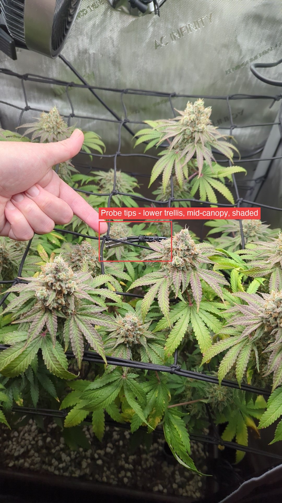
The night temperature is 78–81 °F. The day temperature is 78–84 °F. The two are almost the same.
The light is off for 12 hours each night. If the light were the main heat source, the temperature would fall when the light goes off. It does not fall.
Therefore the room sets the tent temperature, and the room is about 78 °F. The light adds only a few degrees at the top of the range.
This changes the fix. A tent cannot go below the temperature of the air it pulls in. Cool the room first. Dim the light second.
Do not raise the humidity. The VPD number is high, and a higher humidity would correct it. But low humidity plus warm air is hostile to bud rot. KB 0505 · Diseases (Mold, Rot, Mildew)Fungal problems are mostly an environment story: humidity, temperature, and airflow. Prevention beats treatment because by the time buds are affected, that material is usually lost.Covers: Bud rot / Botrytis (the dangerous one in flower) · Powdery mildew (PM) · Leaf septoria (yellow leaf spot) — outdoor · Root rot (Pythium) · Prevention (covers all three)GrowBuddy knowledge base · 05-diseases.md says botrytis needs humidity above 60% and temperatures of 60–75 °F. This tent sits outside both conditions. The colas are dense and the harvest is close. Keep that protection.
They will stop new spires. KB 0303 · Environmental Stress & WateringThese cause more "deficiency" misdiagnoses than actual deficiencies. Check here early.Covers: pH & nutrient lockout · Nutrient burn vs light burn vs heat (the big three look-alikes) · Light & heat · Temperature / humidity / VPD by stage · Watering: over vs under vs heat droop · Wind burnGrowBuddy knowledge base · 03-environmental-and-watering.md is clear on this point.
They will not undo the spires that already formed. Those towers stay until harvest.
The real value is the next grow. Run the tent under 80 °F from day one. Build a night drop. Record the temperature and the humidity from day one.
Harvest. Foxtail spires push young white pistils onto ripe buds. So pistil colour over-reads ripeness. This report finds spires at the top plane and the middle plane. Therefore do not judge ripeness from pistils at any plane. Use a loupe. Check every 2 days. Sample the calyx surface, not the sugar leaf.
Yield. The estimate stays at ~100–150 g dried, with ~120 g as the central figure. MSNL states that stress foxtail "can reduce density and yield" and gives the bud an "airy, fluffy and lightweight composition". The bottom-tier photos also confirm that the understory adds almost nothing. Both facts cap the number.
Bud rot. The grower inspected the colas by hand on 8/9 and found no bud rot. The tent conditions are hostile to botrytis. Repeat the hand check on cut day.
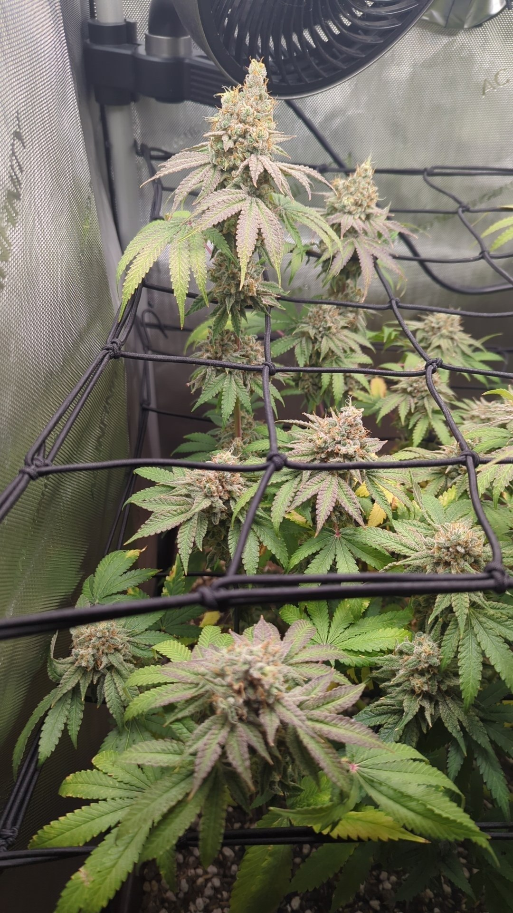
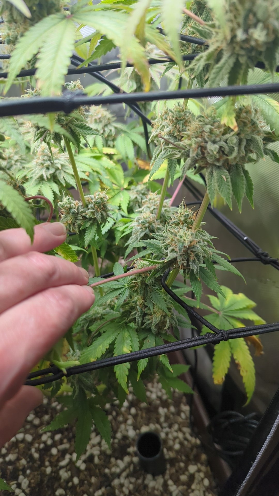
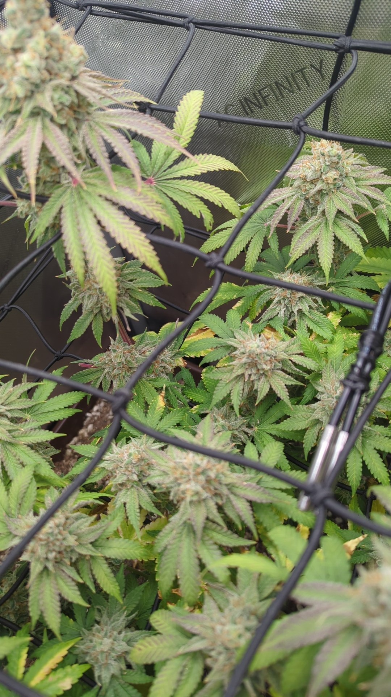
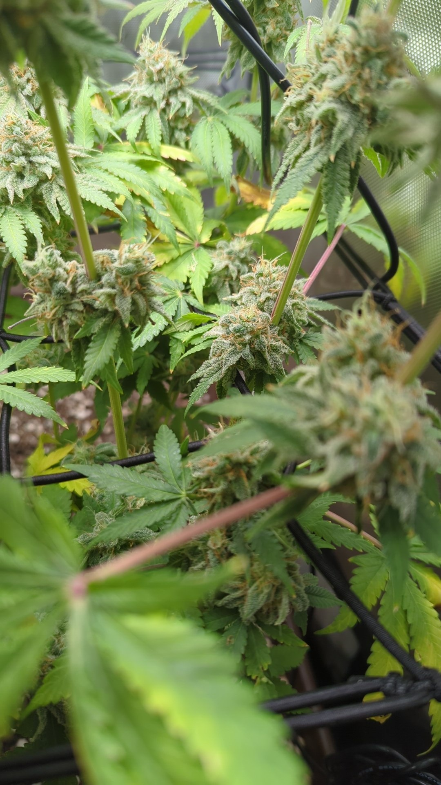
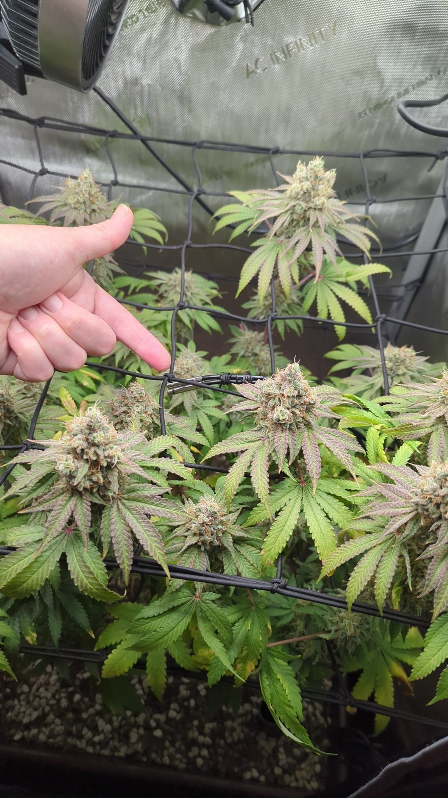
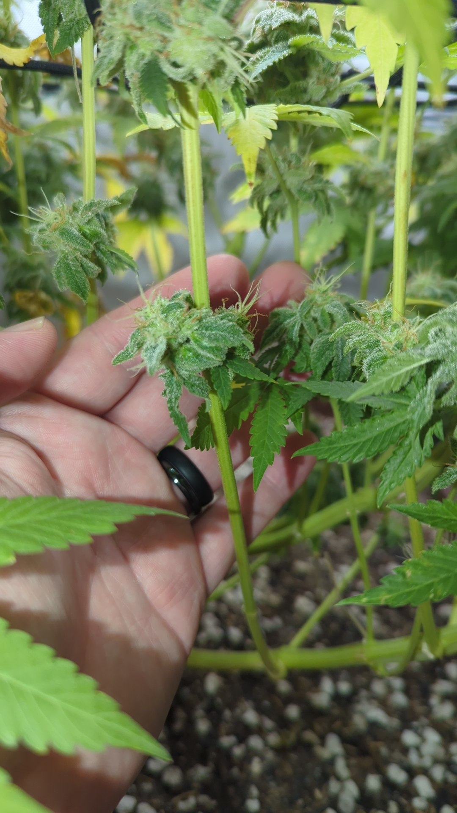
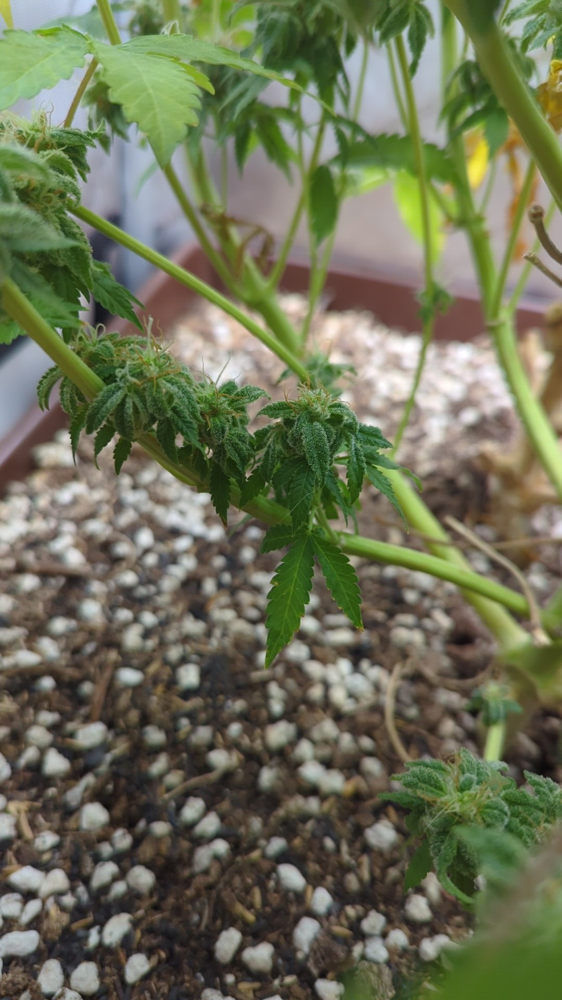
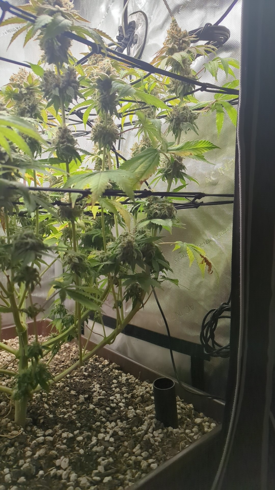
{kind=link}
{kind=link}
{kind=link}
{kind=link}
{kind=link}
{kind=link}
{kind=link}
{kind=link}
{kind=link}
{kind=link}
{kind=link}
{kind=link}